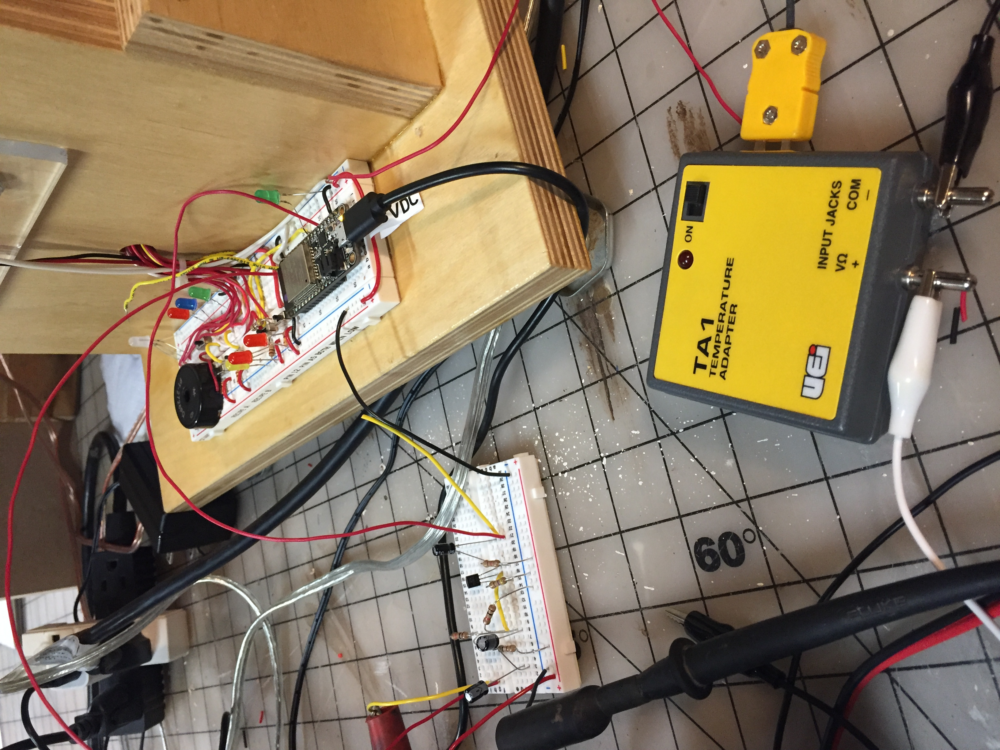

Last Days Before Project is Due!!
I had a lot of unexpected trouble getting the huzzah to read the thermocouple output. The output is only 1.2-1.5 millivolts at room temperature, and as I learned through experimentation (and Prof Hart pointed out to me in some Adafruit documentation) The Adafruit ESP32 Feather board we are using has an analog input threshold of about 100 millivolts. Therefore, the board has a very inconsistant reading at the A2 pin until at least 100 millivolts are present. I tried several amp options including: building an amp with a transistor; using an LM386 amp chip; and finally resorted to using a pre-amp that I had from a control system I use to work on frequently. The problem with the pre-amp is that it requires a 24vdc input voltage. Therefore, I had to incorporate the "complete" control mother board to get the correct voltage to the pre-amp. Photo below is the pre-amp.

Return to my home page.
No Power To The Electrodes!!
After final assembly a major problem emerged: the solid-state relay was not being activated by the 3.3vdc output from the Metro board. The LED on the breadboard was lighting indicating output to the ssr. However, the ssr LED was not lighting. After a little testing with a multimeter I determined the Metro output voltage was being pulled down to about 2.0vdc. The ssr needs about 3.0vdc minimum to activate. I installed a resistor between the breadboard LED and ground. This got the Metro output voltage above 3.0vdc. I'm back in the hotdog business!
Video of solid-state relay operating as needed:
This is the motherboard for the system that utilizes the pre-amp. At room temperature it has an output of about 750 milli volts:

Measurement of voltage across an led in the hotdog with 120vac on:

The distance between the nail points is about 4 inches. The spacing of the pins of an LED is about 1/8". Therefore, with 120vac at the nails the voltage across LED pins should be 120vac/(4"/.125") = 3.75vac. That is pretty close to the measured LED voltage in the photo above.
Sketch of hotdog resistance circuit:
Amplifier constructed using a 2N3904 transistor that did provide enough gain to correct the problem:
I built this voltage amp with a gain of 10, and also 20, but they did not appear to help. I attemped a gain of 100, but "noise" was extreme.(Gain is determined by the ratio of the collector and emitter resistors.)

An Amp I have that takes a thermocouple input and outputs 1 millivolt per degree F of temperature:(this did not give a high enough output at room temperature to break the 100 millivolt threshold required for the huzzah to work correctly using pin A2 to read an analog input voltage) 